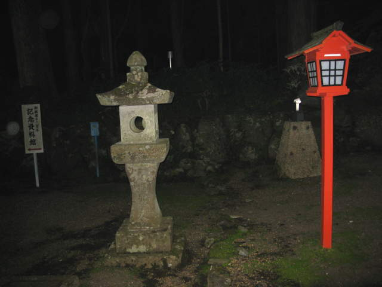
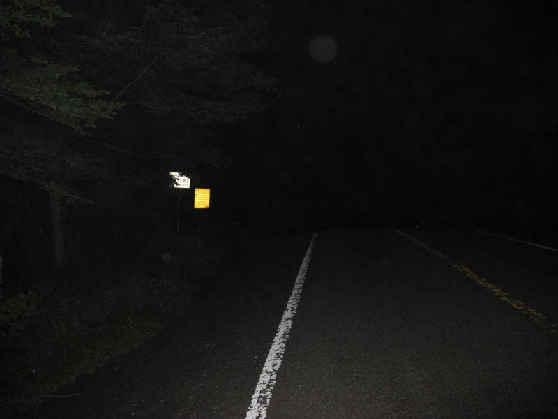

Mount Fuji is 3,776 meters high. I had it all planned. We would take the bus to the 5th station at around 2,000 meters altitude, where most hikers start, at night time, and hike up the mountain before sunrise, so you can watch sunrise at the peak. This is the usual way to climb Mt. Fuji. Well, this didn't happen. The bus we wanted didn't run at the time we wanted until two days later. We considered a taxi but weren't sure we conveyed to him where exactly we wanted to go. We then decided to try a bus. The driver seemed sure that he knew where we wanted to go. The danger was, if he brought us to the first station instead of fifth station, we'd be hiking twice as far, from the very base of Mt. Fuji. We nervously watched the fare board, hoping that nothing got lost in translation. The way the fare board works is pretty simple. The longer you stay on, the higher the fares that appear. You pay the last number that lit up when you get off.
Here we are at Subashiri, at the very base of the mountain. I'm not quite sure if we knew we were at the wrong spot yet.
Ritualistically wash your hands here before you climb Mount Fuji. If only I knew what I was in for, I might have actually stalled by washing my hands.
Tombstones at the base of Mt. Fuji, or "Fuji-san" as the locals called it.

At this point, we were trying to figure out which direction to go.
We found this board which pretty much mapped out our route. If they had any English or numbers, this would have been a whole lot more useful. Just to give you an idea of what you're looking at, we were around the very bottom of this map. We had to walk along that straight shot that leads to the zigzagging section, and then proceed to zigzag until we reached the skinny little hiking trail at the top. Until that hiking trail, it was all paved street. Very dark, and very creepy. We had no idea how far we'd be walking, and weren't even sure we'd ever reach our destination!

Here's a dark road along the way. I had a flashlight which turned out to be very handy the whole way.
Here's the inside of a lifeless, creepy little shack we saw along the way. Lots of Blair Witch-vibe going on.

We finally made it up to where we originally wanted to start climbing from! By my estimate, at this point we walked a total of over 13 kilometers at a 15% incline. If you work out the math,that brings us to about 2000 meters altitude.
Here's a place we were able to go to the bathroom before starting on the hiking trail. My friends didn't get too much further past this point. It was cold and had various ailments. I was noticing the effect of the thinning air a bit, but I was determined to continue as long as I was able. I realized this would be the only time in my life, most likely, that I would be attempting this. I hiked sometimes as little as 10 steps at a time before I had to take another break. It got more and more difficult. I kept moving for the most part, so the freezing air did not affect me too much.
The tradition was to reach the peak during the night and watch the sunrise from there. Because of the bus snafu, this became much more difficult. My goal at this point was to find other people, then watch the sunrise with them, and then proceed to the summit. A couple times it rained on me, and the worst thing was when I had an issue with a contact lens drying up and falling out. I managed though, caring about safety first and progress second. I noticed the sunrise was approaching, and I was nowhere in sight of other people yet. I found some sense of determination and just kept going.
Finally, I reached one of the stations around 3,200 meters and there was a good number of people there.
With the cloud cover, the towns below could not see the sunrise as early as I did.
Mount Fuji is just about the highest point you can get to without being a serious rock climber. I don't know if I'll ever be able to take another picture quite like this again in my lifetime.

One of the people there took this picture of me. Only half of my brain was functioning at this point due to lack of oxygen. In fact, I'd say around 3000 meters altitude is where I started having a really hard time making progress. Your meterage may vary.

Here I am, soon to be conquerer of Fuji-san.
I continued, in bright day light, climbing higher and higher, wanting to get the rest of the climb over with. It was just exhausting. After a long effort, I figured I was almost there. Hopefully at least in the 3600's. I saw the 3,450 meter mark and was rather upset. Since the sunrise, all that effort climbing only amounted to another 250 meters, and I had much more than that still ahead of me. I was so exhausted, but there was no way I was quitting now.
There were a couple more stops in the remaining climb. I took the opportunity to take another picture of the heavens.
As I mentioned, it was below freezing up there. The wind, despite the workout I was getting, was still biting cold. Here's some snow.
Safety was my primary concern the whole way. I'm not a "Don't look down!" type of person, but the thought of falling did cross my mind on occasion. I was extra-careful about getting proper footing. Admittedly, this hike was very annoying without a hiking stick. Get at least one, maybe two, if you try this yourself.
Finally I was approaching the summit. I reached this group of guys around 3,600 meters. There was a little guy with a megaphone in the front, cheering them on in Japanese. The group made way for me to pass, but I just looked up in resignation, shaking my head, acknowledging that I was not physically able to pass. The little guy with the megaphone was inspiring for me too, even though I could not understand him.
I did it! I reached the summit. My brain, in this picture, reached a 90% dormant state. I still pulled off this awesome pose.
Fuji-san is a volcano. Here's the crater at the top.
Another shot of the icy crater.

Walking around the summit, I saw this little hill. I thought to myself, "Hey! I thought I reached the summit! That spot looks higher!" Shortly after, I climbed up there too.
There were actually a number of souvenir shops at the summit. You can see here they were selling hiking sticks. I had no idea just how useful those would be until I'd try to descend without one. I ended up, instead, buying a much more portable bronze metal with the date engraved into it.

Also at the summit, like practically every street of Japan, were vending machines. How I adored those vending machines. So thirsty! And hungry! And tired! And weak! I was not in good shape at this point. I rested up here, but it felt like it was doing no good.
I made my way to another bathroom. I thought it was cool that you had to flush manually with a hose.
Finally I started to begin my descent. My knees were shaky going down. I passed by this lady who was getting samples of ash from the snow, probably for scientific study.

Every so often, I had to dodge one of these giant bulldozers. Some nice fairly local girls hiking along with me pointed out that I was about to get squished by one. It was not always easy to get out of their way. You only have to worry about them on the descent, where you go down wide paths at a steady descent on a thick layer of volcanic ash. If you have two hiking sticks, this is rather easy. Otherwise, it is very easy to trip and fall. I came up with a system where I'd lean back and step with my heel first, then roll the foot forward as I slid down. It worked pretty well, and my knees stopped feeling wobbly after I skeetered past the 3,000 meters mark.

Here are some hikers that witnessed my awesome sliding technique. I had to slide for about three hours straight. My shoes were a mess, and the rest of me was fairly dusty, but I made it. The whole thing was 12 hours going up, an hour at the summit, and 3 hours going down, so I was doing this shit for 16 hours straight. I will always remember this, so I avoid Mount Fuji in the future.
Back